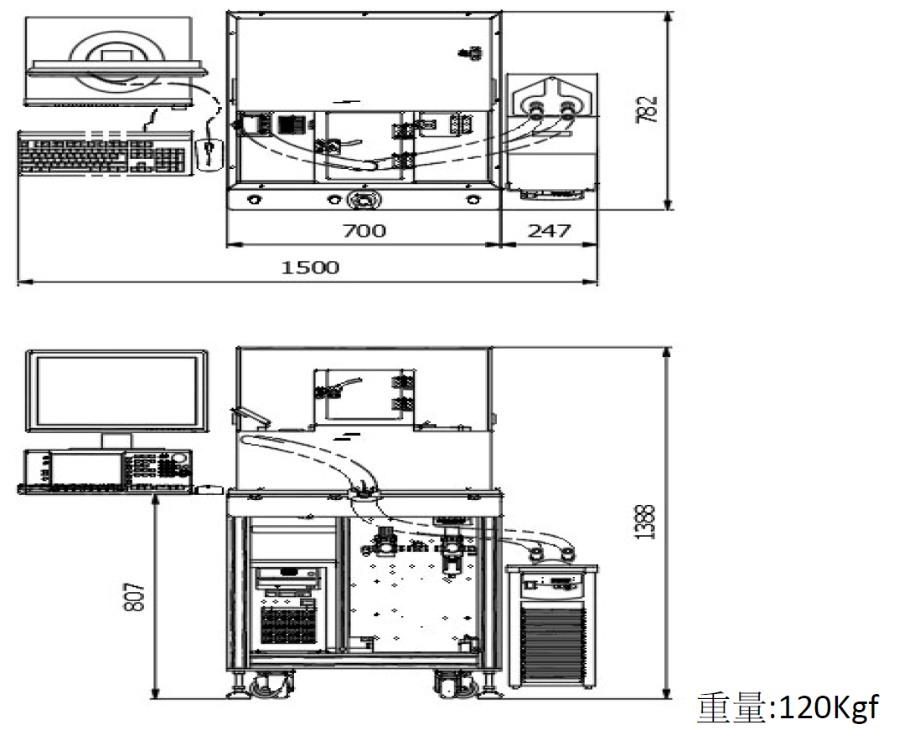

全自動常低溫LD BARTESTER
一.機型
全自動常低溫LD BARTESTER LTBTR‐8000
二.裝置說明
裝置採用致冷晶片搭配冰水機的降溫方式，提供左側進料料盤，右側出料料盤的進出控制方 式，作業員將待測CHIPBAR 放在進料料盤後，把料盤放到左側的LOADER 軸上，並同時於右側 放置空的收料盤後，押下機台上的左右起動按鈕，此後機台會將BAR 從LOADER 夾取放到到測 試座開始測試，測試過程中如過因外力造成BAR 位置偏差，測試座會自動補正其偏差部分，達 到相同位置點測的目的，當整條BAR 測完後會自動將BAR 夾取放到UNLOADER 位置，等到所有 待測BAR 全部測完後自動排出，完成一個測試循環。
三.工件及料盤需求規格
1.測試工件
測試工件尺寸需在寬度200um~300umX 長度10mm~40mmX 高度0.1mm
2.料盤
| TYPE | 規格 |
|---|---|
| Loader |
60mmX60mmX6.7mm 溝槽寬W0.8mmXL45mmXD1mm 鋁合金硬質陽極處理 |
| TYPE | 單一容量 | 排列方式 | 可投入料盤 |
|---|---|---|---|
| Loader | 最多 20pcs | 平行溝槽 | 1片 |
四.測試部規格
| 項次 | 規格 |
|---|---|
| 降溫方式 | PWM 致冷晶片+冷卻冰水循環方式 |
| 溫控範圍 | RT~－40±1℃ |
| 固定方式 | 真空吸取 |
五.機構及精度
1. 8 個高精度電動軸及影像辨識系統
2. LOADER/UNLOADER：行程136mm 精度±1um 以下
3. 工件取放軸：行程400mm 精度±1um 以下
4. 測試平台軸：XYZ 行程150mmX8mmX8mm，精度±1um 以下
5. PD 及收光Fiber 移動軸：X 行程25mm，精度±1um 以下
6. LD Bar 自動夾取進出料系統。
7. 露點控制‐40℃以下(氮氣供給口之露點須在-76℃以下)
<\p>
六.產出速度
1. LIV 測試4s/pcs ,測試精度±5%
2. 波長測試最多可設6 點，掃頻速度2s/point,測試精度±5% (依使用之OSA 會有不同)
七.測試功能
1. NG die 標記功能
2. 測試內容:包含Ith, Iop, Vop, SE(W/A), Rs, SMSR, 以及 L‐I vs dL/dI curve,
V‐I vs dV/dI curve, Kink
3. SMSR 可設定測試六個不同電流之波長.
4. 測試電流可設定0~250mA ±1%，最小解析度0.1mA
5. 測試結果可分類最多12 等級，分類結果可以輸出EXCEL 報表。
6. 可選擇只測LIV 或OSA
7. 可以切換手動或自動上料測試。
8. 三色燈輔助，異常或工件測完會警報提示。
八.動力源
| 項次 | 額定輸入容量 |
|---|---|
| 電源 | 單相 AC110V 60Hz，1KVA |
| 氮氣 | 0.35~0.7MPa，5L/min 以上 |
| 真空 | 500mmHg，40L/min |
九.設備尺寸(如下圖)
十.設備環境(如下圖)
周圍溫度0~35℃，濕度35~85(不結露)及無腐蝕性氣體的環境。